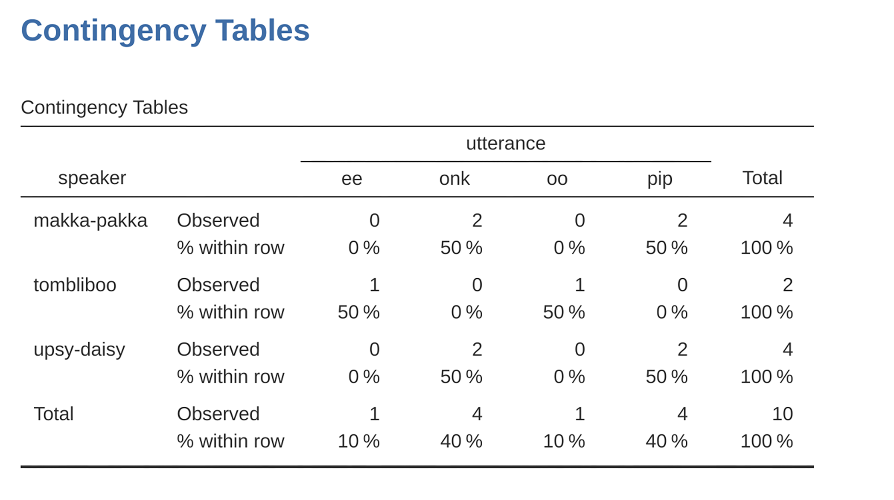
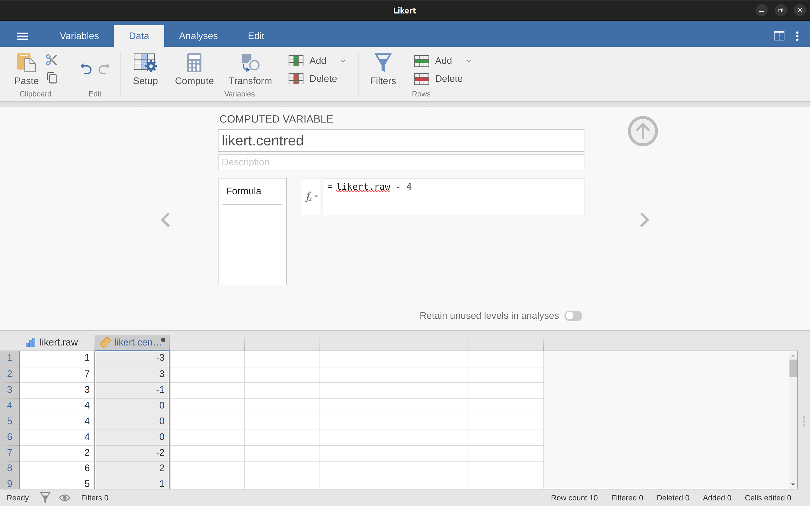
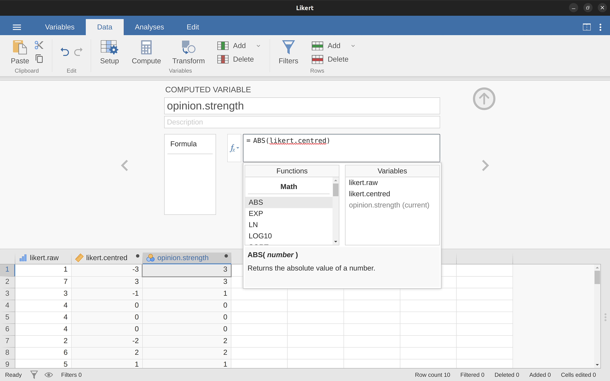
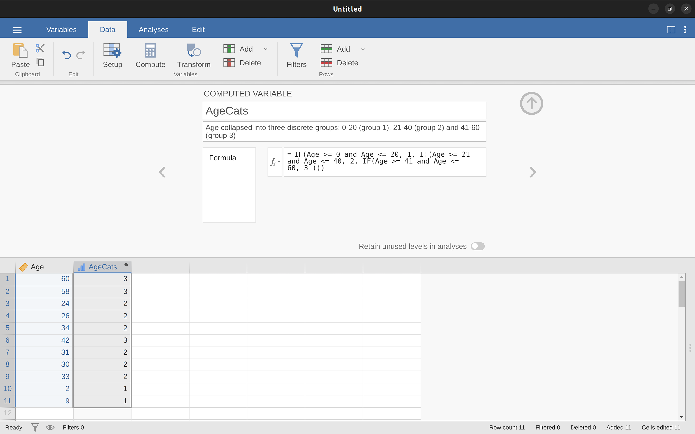
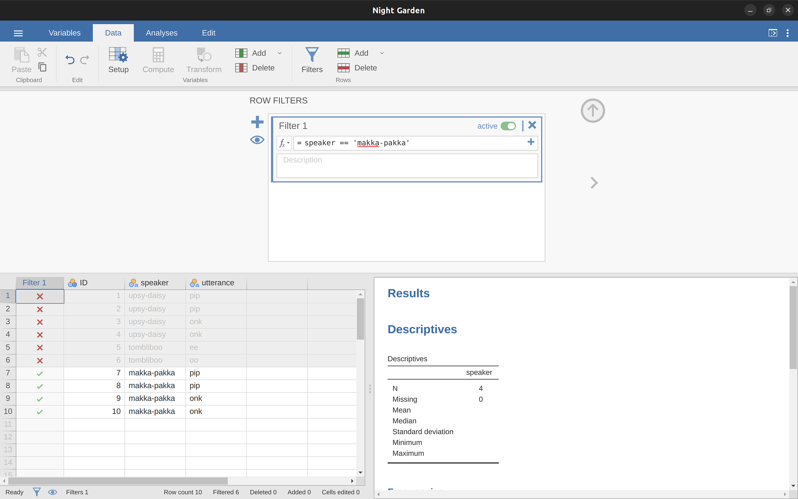

| levels | Counts | \(\%\) of Total | Cumulative \(\%\) |
|---|---|---|---|
| makka-pakka | 4 | 40\(\%\) | 40\(\%\) |
| tombliboo | 2 | 20\(\%\) | 60\(\%\) |
| upsy-daisy | 4 | 40\(\%\) | 100\(\%\) |
6 Pragmatic matters
The garden of life never seems to confine itself to the plots philosophers have laid out for its convenience. Maybe a few more tractors would do the trick.
– Roger Zelazny1
This is a somewhat strange chapter, even by my standards. My goal in this chapter is to talk a bit more honestly about the realities of working with data than you’ll see anywhere else in the book. The problem with real world data sets is that they are messy. Very often the data file that you start out with doesn’t have the variables stored in the right format for the analysis you want to do. Sometimes there might be a lot of missing values in your data set. Sometimes you only want to analyse a subset of the data. Et cetera. In other words, there’s a lot of data manipulation that you need to do just to get the variables in your data set into the format that you need it. The purpose of this chapter is to provide a basic introduction to these pragmatic topics. Although the chapter is motivated by the kinds of practical issues that arise when manipulating real data, I’ll stick with the practice that I’ve adopted through most of the book and rely on very small, toy data sets that illustrate the underlying issue. Because this chapter is essentially a collection of techniques and doesn’t tell a single coherent story, it may be useful to start with a list of topics:
- Tabulating and cross-tabulating data
- Logical expressions in jamovi
- Transforming and recoding a variable
- A few more mathematical functions and operations
- Extracting a subset of the data
As you can see, the list of topics that the chapter covers is pretty broad, and there’s a lot of content there. Even though this is one of the longest and hardest chapters in the book, I’m really only scratching the surface of several fairly different and important topics. My advice, as usual, is to read through the chapter once and try to follow as much of it as you can. Don’t worry too much if you can’t grasp it all at once, especially the later sections. The rest of the book is only lightly reliant on this chapter so you can get away with just understanding the basics. However, what you’ll probably find is that later on you’ll need to flick back to this chapter in order to understand some of the concepts that I refer to here.
6.1 Tabulating and cross-tabulating data
A very common task when analysing data is the construction of frequency tables, or crosstabulation of one variable against another. These tasks can be achieved in jamovi and I’ll show you how in this section.
6.1.1 Creating tables for single variables
Let’s start with a simple example. As the father of a small child I naturally spend a lot of time watching TV shows like In the Night Garden. In the nightgarden.csv file, I’ve transcribed a short section of the dialogue. The file contains two variables of interest, speaker and utterance. Open up this data set in jamovi and take a look at the data in the ‘spreadsheet’ view. You will see that the data looks something like this:
‘speaker’ variable: upsy-daisy upsy-daisy upsy-daisy upsy-daisy tombliboo tombliboo makka-pakka makka-pakka makka-pakka makka-pakka ‘utterance’ variable: pip pip onk onk ee oo pip pip onk onk
Looking at this it becomes very clear what happened to my sanity! With these as my data, one task I might find myself needing to do is construct a frequency count of the number of words each character speaks during the show. The jamovi ‘Descriptives’ screen has a check box called ‘Frequency tables’ which does just this, see Table 6.1.
The output here tells us on the first line that what we’re looking at is a tabulation of the speaker variable. In the ‘Levels’ column it lists all the different speakers that exist in the data, and in the ‘Counts’ column it tells you how many times that speaker appears in the data. In other words, it’s a frequency table.
In jamovi, the ‘Frequency tables’ check box will only produce a table for single variables. For a table of two variables, for example combining speaker and utterance so that we can see how many times each speaker said a particular utterance, we need a cross-tabulation or contingency table. In jamovi you can do this by selecting the ‘Frequencies’ - ‘Contingency Tables’ - ‘Independent Samples’ analysis, and moving the speaker variable into the ‘Rows’ box, and the utterances variable into the ‘Columns’ box. You then should have a contingency table like the one shown in Figure 6.1.
Don’t worry about the “\(\chi^2\) Tests” table that is produced. We are going to cover this later on in Chapter 10. When interpreting the contingency table remember that these are counts, so the fact that the first row and second column of numbers corresponds to a value of 2 indicates that Makka-Pakka (row 1) says “onk” (column 2) twice in this data set.
6.1.2 Adding percentages to a contingency table
The contingency table shown in Figure 6.1 shows a table of raw frequencies. That is, a count of the total number of cases for different combinations of levels of the specified variables. However, often you want your data to be organised in terms of percentages as well as counts. You can find the check boxes for different percentages under the ‘Cells’ option in the ‘Contingency Tables’ window. First, click on the ‘Row’ check box and the Contingency Table in the output window will change to the one in Figure 6.2.

What we’re looking at here is the percentage of utterances made by each character. In other words, 50% of Makka-Pakka’s utterances are “pip”, and the other 50% are “onk”. Let’s contrast this with the table we get when we calculate column percentages (uncheck ‘Row’ and check ‘Column’ in the Cells options window), see Figure 6.3. In this version, what we’re seeing is the percentage of characters associated with each utterance. For instance, whenever the utterance “ee” is made (in this data set), 100% of the time it’s a Tombliboo saying it.

6.2 Logical expressions in jamovi
A key concept that a lot of data transformations in jamovi rely on is the idea of a logical value. A logical value is an assertion about whether something is true or false. This is implemented in jamovi in a pretty straightforward way. There are two logical values, namely TRUE and FALSE. Despite the simplicity, logical values are very useful things. Let’s see how they work.
6.2.1 Assessing mathematical truths
In George Orwell’s classic book 1984 one of the slogans used by the totalitarian Party was “two plus two equals five”. The idea being that the political domination of human freedom becomes complete when it is possible to subvert even the most basic of truths. It’s a terrifying thought, especially when the protagonist Winston Smith finally breaks down under torture and agrees to the proposition. “Man is infinitely malleable”, the book says. I’m pretty sure that this isn’t true of humans2 and it’s definitely not true of jamovi. jamovi is not infinitely malleable, it has rather firm opinions on the topic of what is and isn’t true, at least as regards basic mathematics. If I ask it to calculate \(2 + 2\)3, it always gives the same answer, and it’s not bloody 5!
Of course, so far jamovi is just doing the calculations. I haven’t asked it to explicitly assert that \(2 + 2 = 4\) is a true statement. If I want jamovi to make an explicit judgement, I can use a command like this: \(2 + 2 == 4\)
What I’ve done here is use the equality operator, \(==\), to force jamovi to make a “true or false” judgement.4 Okay, let’s see what jamovi thinks of the Party slogan, so type this into the compute new variable ‘formula’ box:
\[2 + 2 == 5\]
And what do you get? It should be a whole set of ‘false’ values in the spreadsheet column for your newly computed variable. Booyah! Freedom and ponies for all! Or something like that. Anyway, it was worth having a look at what happens if I try to force jamovi to believe that two plus two is five by making a statement like \(2 + 2 = 5\). I know that if I do this in another program, say R, then it throws up an error message. But wait, if you do this in jamovi you get a whole set of ‘false’ values. So what is going on? Well, it seems that jamovi is being pretty smart and realises that you are testing whether it is TRUE or FALSE that \(2 + 2 = 5\), regardless of whether you use the correct equality operator, \(==\), or the equals sign “\(=\)”.
Anyway, it was worth having a look at what happens if I try to force jamovi to believe that two plus two is five by making a statement like \(2 + 2 = 5\). I know that if I do this in another program, say R, then it throws up an error message. But wait, if you do this in jamovi you get a whole set of ‘false’ values. So what is going on? Well, it seems that jamovi is being pretty smart and realises that you are testing whether it is TRUE or FALSE that \(2 + 2 = 5\), regardless of whether you use the correct equality operator, \(==\), or the equals sign “\(=\)”.
6.2.2 Logical operations
So now we’ve seen logical operations at work. But so far we’ve only seen the simplest possible example. You probably won’t be surprised to discover that we can combine logical operations with other operations and functions in a more complicated way, like this: \(3 \times 3 + 4 \times 4 == 5 \times 5\) or this \(SQRT(25) == 5\)
Not only that, but as Table 6.2 illustrates, there are several other logical operators that you can use corresponding to some basic mathematical concepts. Hopefully these are all pretty self-explanatory. For example, the less than operator < checks to see if the number on the left is less than the number on the right. If it’s less, then jamovi returns an answer of TRUE, but if the two numbers are equal, or if the one on the right is larger, then jamovi returns an answer of FALSE.
In contrast, the less than or equal to operator \(<=\) will do exactly what it says. It returns a value of TRUE if the number of the left hand side is less than or equal to the number on the right hand side. At this point I hope it’s pretty obvious what the greater than operator \(<\) and the greater than or equal to operator \(<=\) do!
Next on the list of logical operators is the not equal to operator != which, as with all the others, does what it says it does. It returns a value of TRUE when things on either side are not identical to each other. Therefore, since \(2 + 2\) isn’t equal to \(5\), we would get ‘true’ as the value for our newly computed variable. Try it and see:
\[2 + 2 \text{ != } 5\]
We’re not quite done yet. There are three more logical operations that are worth knowing about, listed in Table 6.3. These are the not operator !, the and operator and, and the or operator or. Like the other logical operators, their behaviour is more or less exactly what you’d expect given their names. For instance, if I ask you to assess the claim that “either \(2 + 2 = 4\) or \(2 + 2 = 5\)” you’d say that it’s true. Since it’s an “either-or” statement, all we need is for one of the two parts to be true. That’s what the or operator does:5
| operation | operator | example input | answer |
|---|---|---|---|
| less than | 2 | TRUE | |
| less than or equal to | < | 2 < = 2 | TRUE |
| greater than | > | 2 > 3 | FALSE |
| greater than or equal to | > = | 2 > = 2 | TRUE |
| equal to | = = | 2 = = 3 | FALSE |
| not equal to | != | 2 != 3 | TRUE |
| operation | operator | example input | answer |
|---|---|---|---|
| not | NOT | NOT(1==1) | FALSE |
| or | or | (1==1) or (2==3) | TRUE |
| and | and | (1==1) and (2==3) | FALSE |
\[(2+2 == 4) \text{ or } (2+2 == 5)\]
On the other hand, if I ask you to assess the claim that “both \(2 + 2 = 4\) and \(2 + 2 = 5\)” you’d say that it’s false. Since this is an and statement we need both parts to be true. And that’s what the and operator does:
\[(2+2 == 4) \text{ and } (2+2 == 5)\]
Finally, there’s the not operator, which is simple but annoying to describe in English. If I ask you to assess my claim that “it is not true that \(2 + 2 = 5\)” then you would say that my claim is true, because actually my claim is that “\(2 + 2 = 5\) is false”. And I’m right. If we write this in jamovi we use this:
\[NOT(2+2 == 5)\]
In other words, since \(2+2 == 5\) is a FALSE statement, it must be the case that \(NOT(2+2 == 5)\) is a TRUE one. Essentially, what we’ve really done is claim that “not false” is the same thing as “true”. Obviously, this isn’t really quite right in real life. But jamovi lives in a much more black or white world. For jamovi everything is either true or false. No shades of grey are allowed.
Of course, in our \(2 + 2 = 5\) example, we didn’t really need to use the “not” operator \(NOT\) and the “equals to” operator \(==\) as two separate operators. We could have just used the “not equals to” operator \(!=\) like this:
\[2+2 \text{ != } 5\]
6.2.3 Applying logical operation to text
I also want to briefly point out that you can apply these logical operators to text as well as to logical data. It’s just that we need to be a bit more careful in understanding how jamovi interprets the different operations. In this section I’ll talk about how the equal to operator \(==\) applies to text, since this is the most important one. Obviously, the not equal to operator != gives the exact opposite answers to \(==\) so I’m implicitly talking about that one too, but I won’t give specific commands showing the use of \(!=\).
Okay, let’s see how it works. In one sense, it’s very simple. For instance, I can ask jamovi if the word “cat” is the same as the word “dog”, like this:
“cat” \(==\) “dog” That’s pretty obvious, and it’s good to know that even jamovi can figure that out. Similarly, jamovi does recognise that a “cat” is a “cat”: “cat” \(==\) “cat” Again, that’s exactly what we’d expect. However, what you need to keep in mind is that jamovi is not at all tolerant when it comes to grammar and spacing. If two strings differ in any way whatsoever, jamovi will say that they’re not equal to each other, as with the following: ” cat” \(==\) “cat” “cat” \(==\) “CAT” “cat” \(==\) “c a t”
You can also use other logical operators too. For instance jamovi also allows you to use the > and > operators to determine which of two text ‘strings’ comes first, alphabetically speaking. Sort of. Actually, it’s a bit more complicated than that, but let’s start with a simple example:
“cat” \(<\) “dog”
In jamovi, this example evaluates to ‘true’. This is because “cat” does does come before “dog” alphabetically, so jamovi judges the statement to be true. However, if we ask jamovi to tell us if “cat” comes before “anteater” then it will evaluate the expression as false. So far, so good. But text data is a bit more complicated than the dictionary suggests. What about “cat” and “CAT”? Which of these comes first? Try it and find out:
“CAT” \(<\) “cat”
This in fact evaluates to ‘true’. In other words, jamovi assumes that uppercase letters come before lowercase ones. Fair enough. No-one is likely to be surprised by that. What you might find surprising is that jamovi assumes that all uppercase letters come before all lowercase ones. That is, while “anteater” \(<\) “zebra” is a true statement, and the uppercase equivalent “ANTEATER” \(<\) “ZEBRA” is also true, it is not true to say that “anteater” \(<\) “ZEBRA”, as the following extract illustrates. Try this:
“anteater” \(<\) “ZEBRA”
This evaluates to ‘false’, and this may seem slightly counter-intuitive. With that in mind, it may help to have a quick look at Table 6.4 which lists various text characters in the order that jamovi processes them.
| \( \text{!} \) | \( \text{"} \) | \( \# \) | \( \text{\$} \) | \( \% \) | \( \& \) | \( \text{'} \) | \( \text{(} \) |
|---|---|---|---|---|---|---|---|
| \( \text{)} \) | \( \text{*} \) | \( \text{+} \) | \( \text{,} \) | \( \text{-} \) | \( \text{.} \) | \( \text{/} \) | 0 |
| 1 | 2 | 3 | 4 | 5 | 6 | 7 | 8 |
| 9 | \( \text{:} \) | \( \text{;} \) | < | \( \text{=} \) | > | \( \text{?} \) | \( \text{@} \) |
| A | B | C | D | E | F | G | H |
| I | J | K | L | M | N | O | P |
| Q | R | S | T | U | V | W | X |
| Y | Z | \( \text{[} \) | \( \backslash \) | \( \text{]} \) | \( \hat{} \) | \( \_ \) | \( \text{`} \) |
| a | b | c | d | e | g | h | i |
| j | k | l | m | n | o | p | q |
| r | s | t | u | v | w | x | y |
| z | \(\text{\{}\) | \(\text{|}\) | \(\text{\}}\) |
6.3 Transforming and recoding a variable
It’s not uncommon in real world data analysis to find that one of your variables isn’t quite equivalent to the variable that you really want. For instance, it’s often convenient to take a continuous-valued variable (e.g., age) and break it up into a smallish number of categories (e.g., younger, middle, older). At other times, you may need to convert a numeric variable into a different numeric variable (e.g., you may want to analyse at the absolute value of the original variable). In this section I’ll describe a few key ways you can do these things in jamovi.
6.3.1 Creating a transformed variable
The first trick to discuss is the idea of transforming a variable. Taken literally, anything you do to a variable is a transformation, but in practice what it usually means is that you apply a relatively simple mathematical function to the original variable in order to create a new variable that either (a) provides a better way of describing the thing you’re actually interested in, or (b) is more closely in agreement with the assumptions of the statistical tests you want to do. Since, at this stage, I haven’t talked about statistical tests or their assumptions, I’ll show you an example based on the first case.
Suppose I’ve run a short study in which I ask 10 people a single question:
On a scale of 1 (strongly disagree) to 7 (strongly agree), to what extent do you agree with the proposition that “Dinosaurs are awesome”?
Now let’s load and look at the data. The data file likert.omv contains a single variable that contains raw Likert-scale responses for these 10 people. However, if you think about it, this isn’t the best way to represent these responses. Because of the fairly symmetric way that we set up the response scale, there’s a sense in which the midpoint of the scale should have been coded as 0 (no opinion), and the two endpoints should be `3 (strongly agree) and ´3 (strongly disagree). By recoding the data in this way it’s a bit more reflective of how we really think about the responses. The recoding here is pretty straightforward, we just subtract 4 from the raw scores. In jamovi you can do this by computing a new variable: click on the ‘Data’ - ‘Compute’ button and you will see that a new variable has been added to the spreadsheet. Let’s call this new variable likert.centred (go ahead and type that in) and then add the following in the formula box, like in Figure 6.4: ‘likert.raw - 4’

One reason why it might be useful to have the data in this format is that there are a lot of situations where you might prefer to analyse the strength of the opinion separately from the direction of the opinion. We can do two different transformations on this likert.centred variable in order to distinguish between these two different concepts. First, to compute an opinion.strength variable, we want to take the absolute value of the centred data (using the ‘ABS’ function).6 In jamovi, create another new variable using the ‘Compute’ button. Name the variable opinion.strength and this time click on the fx button next to the ‘Formula’ box. This shows the different ‘Functions’ and ‘Variables’ that you can add to the ‘Formula’ box, so double click on ‘ABS’ and then double click on “likert.centred’ and you will see that the ‘Formula’ box is populated with ABS(likert.centred) and a new variable has been created in the spreadsheet view, as in Figure 6.5.

Second, to compute a variable that contains only the direction of the opinion and ignores the strength, we want to calculate the ‘sign’ of the variable. In jamovi we can use the IF function to do this. Create another new variable using the ‘Compute’ button, name this one opinion.sign, and then type the following into the function box:
IF(likert.centred \(==\) 0, 0, likert.centred / opinion.strength) When done, you’ll see that all negative numbers from the likert.centred variable are converted to -1, all positive numbers are converted to 1 and zero stays as 0, like so:
-1 1 -1 0 0 0 -1 1 1 1
Let’s break down what this ‘IF’ command is doing. In jamovi there are three parts to an ‘IF’ statement, written as ‘IF(expression, value, else)’. The first part, ‘expression’ can be a logical or mathematical statement. In our example, we have specified ‘likert.centred \(==\) 0’, which is TRUE for values where likert.centred is zero. The next part, ‘value’, is the new value where the expression in part one is TRUE. In our example, we have said that for all those values where likert.centred is zero, keep them zero. In the next part, ‘else’, we can enter another logical or mathematical statement to be used if part one evaluates to FALSE, i.e. where likert.centred is not zero. In our example we have divided likert.centred by opinion.strength to give ‘-1’ or ‘+1’ depending of the sign of the original value in likert.centred.7
And we’re done. We now have three shiny new variables, all of which are useful transformations of the original likert.raw data.
6.3.2 Collapsing a variable into a smaller number of discrete levels or categories
One pragmatic task that comes up quite often is the problem of collapsing a variable into a smaller number of discrete levels or categories. For instance, suppose I’m interested in looking at the age distribution of people at a social gathering:
60,58,24,26,34,42,31,30,33,2,9
In some situations it can be quite helpful to group these into a smallish number of categories. For example, we could group the data into three broad categories: young (0-20), adult (21-40) and older (41-60). This is a quite coarse-grained classification, and the labels that I’ve attached only make sense in the context of this data set (e.g., viewed more generally, a 42 year old wouldn’t consider themselves as “older”). We can slice this variable up quite easily using the jamovi ‘IF’ function that we have already used. This time we have to specify nested ‘IF’ statements, meaning simply that IF the first logical expression is TRUE, insert a first value, but IF a second logical expression is TRUE, insert a second value, but IF a third logical expression is TRUE, then insert a third value. This can be written as:
IF(Age >= 0 and Age <= 20, 1, IF(Age >= 21 and Age <= 40, 2, IF(Age >= 41 and Age <= 60, 3 )))
Note that there are three left parentheses used during the nesting, so the whole statement has to end with three right parentheses otherwise you will get an error message. The jamovi screen shot for this data manipulation, along with an accompanying frequency table, is shown in Figure 6.6.

It’s important to take the time to figure out whether or not the resulting categories make any sense at all in terms of your research project. If they don’t make any sense to you as meaningful categories, then any data analysis that uses those categories is likely to be just as meaningless. More generally, in practice I’ve noticed that people have a very strong desire to carve their (continuous and messy) data into a few (discrete and simple) categories, and then run analyses using the categorised data instead of the original data.8 I wouldn’t go so far as to say that this is an inherently bad idea, but it does have some fairly serious drawbacks at times, so I would advise some caution if you are thinking about doing it.
6.3.3 Creating a transformation that can be applied to multiple variables
Sometimes you want to apply the same transformation to more than one variable, for example when you have multiple questionnaire items that all need to be recalculated or recoded in the same way. And one of the neat features in jamovi is that you can create a transformation, using the ‘Data’ - ‘Transform’ button, that can then be saved and applied to multiple variables. Let’s go back to the first example above, using the data file likert.omv that contains a single variable with raw Likert-scale responses for 10 people. To create a transformation that you can save and then apply across multiple variables (assuming you had more variables like this in your data file), first in the spreadsheet editor select (i.e., click) the variable you want to use to initially create the transformation. In our example this is likert.raw. Next click the ‘Transform’ button in the jamovi ‘Data’ ribbon, and you’ll see something like Figure 6.7.
Give your new variable a name, let’s call it opinion.strength and then click on the ‘using transform’ selection box and select ‘Create New Transform…’. This is where you will create, and name, the transformation that can be re-applied to as many variables as you like. The transformation is automatically named for us as ‘Transform 1’ (imaginative, huh. You can change this if you like). Then type the expression “ABS($source - 4)” into the function text box, as in Figure 6.8, press Enter or Return on your keyboard and, hey presto, you have created a new transformation and applied it to the likert.raw variable! Good, eh. Note that instead of using the variable label in the expression, we have instead used ‘$source’. This is so that we can then use the same transformation with as many different variables as we like - jamovi requires you to use ‘$source’ to refer to the source variable you are transforming. Your transformation has also been saved and can be re-used any time you like (providing you save the dataset as an ‘.omv’ file, otherwise you’ll lose it!).
You can also create a transformation with the second example we looked at, the age distribution of people at a social gathering. Go on, you know you want to! Remember that we collapsed this variable into three groups: younger, adult and older. This time we will achieve the same thing, but using the jamovi ‘Transform’ - ‘Add condition’ button. With this data set (go back to it or create it again if you didn’t save it) set up a new variable transformation. Call the transformed variable AgeCats and the transformation you will create Agegroupings. Then click on the big “\(+\)” sign next to the function box. This is the ‘Add condition’ button and I’ve stuck a big red arrow onto Figure 6.9 so you can see exactly where this is. Re-create the transformation shown in Figure 6.9 and when you have done, you will see the new values appear in the spreadsheet window. What’s more, the Age groupings transformation has been saved and can be re-applied any time you like. Ok, so I know that it’s unlikely you will have more than one ‘Age’ variable, but you get the idea now of how to set up transformations in jamovi, so you can follow this idea with other sorts of variables. A typical scenario for this is when you have a questionnaire scale with, say, 20 items (variables) and each item was originally scored from 1 to 6 but, for some reason or quirk of the data you decide to recode all the items as 1 to 3. You can easily do this in jamovi by creating and then re-applying your transformation for each variable that you want to recode.

| function | example input | (answer) | |
|---|---|---|---|
| square root | SQRT(x) | SQRT(25) | 5 |
| absolute value | ABS(x) | ABS(-23) | 23 |
| logarithm (base 10) | LOG10(x) | LOG10(1000) | 3 |
| logarithm (base e) | LN(x) | LN(1000) | 6.91 |
| exponentiation | EXP(x) | EXP(6.908) | 1e+03 |
| box-cox | BOXCOX(x, lamda) | BOXCOX(6.908, 3) | 110 |
6.4 A few more mathematical functions and operations
In the section on Transforming and recoding a variable I discussed the ideas behind variable transformations and showed that a lot of the transformations that you might want to apply to your data are based on fairly simple mathematical functions and operations. In this section I want to return to that discussion and mention several other mathematical functions and arithmetic operations that are actually quite useful for a lot of real world data analysis. Table 6.5 gives a brief overview of the various mathematical functions I want to talk about here, or later.9 Obviously this doesn’t even come close to cataloguing the range of possibilities available, but it does cover a range of functions that are used regularly in data analysis and that are available in jamovi.
6.4.1 Logarithms and exponentials
As I’ve mentioned earlier, jamovi has an useful range of mathematical functions built into it and there really wouldn’t be much point in trying to describe or even list all of them. For the most part, I’ve focused only on those functions that are strictly necessary for this book. However I do want to make an exception for logarithms and exponentials. Although they aren’t needed anywhere else in this book, they are everywhere in statistics more broadly. And not only that, there are a lot of situations in which it is convenient to analyse the logarithm of a variable (i.e., to take a “log-transform” of the variable). I suspect that many (maybe most) readers of this book will have encountered logarithms and exponentials before, but from past experience I know that there’s a substantial proportion of students who take a social science statistics class who haven’t touched logarithms since high school, and would appreciate a bit of a refresher.
In order to understand logarithms and exponentials, the easiest thing to do is to actually calculate them and see how they relate to other simple calculations. There are three jamovi functions in particular that I want to talk about, namely LN(), LOG10() and EXP(). To start with, let’s consider LOG10(), which is known as the “logarithm in base 10”. The trick to understanding a logarithm is to understand that it’s basically the “opposite” of taking a power. Specifically, the logarithm in base 10 is closely related to the powers of 10. So let’s start by noting that 10-cubed is 1000. Mathematically, we would write this:
\[10^3=1000\]
The trick to understanding a logarithm is to recognise that the statement that “10 to the power of 3 is equal to 1000” is equivalent to the statement that “the logarithm (in base 10) of 1000 is equal to 3”. Mathematically, we write this as follows,
\[log_{10}(1000)=3\]
Okay, since the LOG10() function is related to the powers of 10, you might expect that there are other logarithms (in bases other than 10) that are related to other powers too. And of course that’s true: there’s not really anything mathematically special about the number 10. You and I happen to find it useful because decimal numbers are built around the number 10, but the big bad world of mathematics scoffs at our decimal numbers. Sadly, the universe doesn’t actually care how we write down numbers. Anyway, the consequence of this cosmic indifference is that there’s nothing particularly special about calculating logarithms in base 10. You could, for instance, calculate your logarithms in base 2. Alternatively, a third type of logarithm, and one we see a lot more of in statistics than either base 10 or base 2, is called the natural logarithm, and corresponds to the logarithm in base e. Since you might one day run into it, I’d better explain what e is. The number e, known as Euler’s number, is one of those annoying “irrational” numbers whose decimal expansion is infinitely long, and is considered one of the most important numbers in mathematics. The first few digits of e are:
\[e = 2.718282 \]
There are quite a few situation in statistics that require us to calculate powers of \(e\), though none of them appear in this book. Raising e to the power \(x\) is called the exponential of \(x\), and so it’s very common to see \(e^x\) written as exppxq. And so it’s no surprise that jamovi has a function that calculates exponentials, called EXP(). Because the number e crops up so often in statistics, the natural logarithm (i.e., logarithm in base e) also tends to turn up. Mathematicians often write it as \(log_e(x)\) or \(ln(x)\). In fact, jamovi works the same way: the LN() function corresponds to the natural logarithm.
And with that, I think we’ve had quite enough exponentials and logarithms for this book!
6.5 Extracting a subset of the data
One very important kind of data handling is being able to extract a particular subset of the data. For instance, you might be interested only in analysing the data from one experimental condition, or you may want to look closely at the data from people over 50 years in age. To do this, the first step is getting jamovi to filter the subset of the data corresponding to the observations that you’re interested in.
This section returns to the nightgarden.csv data set. If you’re reading this whole chapter in one sitting, then you should already have this data set loaded into a jamovi window. For this section, let’s focus on the two variables speaker and utterance (see Tabulating and cross-tabulating data) if you’ve forgotten what those variables look like). Suppose that what I want to do is pull out only those utterances that were made by Makka-Pakka. To that end, we need to specify a filter in jamovi. First open up a filter window by clicking on ‘Filters’ on the main jamovi ‘Data’ toolbar. Then, in the ‘Filter 1’ text box, next to the ‘=’ sign, type the following:
speaker == ‘makka-pakka’

When you have done this, you will see that a new column has been added to the spreadsheet window (see Figure 6.10), labelled ‘Filter 1’, with the cases where speaker is not ‘makka-pakka’ greyed-out (i.e., filtered out) and, conversely, the cases where speaker is ‘makka-pakka’ have a green check mark indicating they are filtered in. You can test this by running ‘Exploration’ - ‘Descriptives’ - ‘Frequency tables’ for the speaker variable and seeing what that shows. Go on, try it!
Following on from this simple example, you can also build up more complex filters using logical expressions in jamovi. For instance, suppose I wanted to keep only those cases when the utterance is either “pip” or “oo”. In this case in the ‘Filter 1’ text box, next to the ‘=’ sign, you would type the following:
utterance == ‘pip’ or utterance == ‘oo’
6.6 Summary
Obviously, there’s no real coherence to this chapter. It’s just a grab bag of topics and tricks that can be handy to know about, so the best wrap up I can give here is just to repeat this list:
The quote comes from Home is the Hangman, published in 1975.↩︎
I offer up my teenage attempts to be “cool” as evidence that some things just can’t be done.↩︎
You can do this in the Compute new variable screen, though just calculating 2 + 2 for every cell of a new variable is not very useful!↩︎
Note that this is a very different operator to the equals operator =. A common typo that people make when trying to write logical commands in jamovi (or other languages, since the “= versus ==” distinction is important in many computer and statistical programs) is to accidentally type = when you really mean ==. Be especially cautious with this, I’ve been programming in various languages since I was a teenager and I still screw this up a lot. Hmm. I think I see why I wasn’t cool as a teenager. And why I’m still not cool.↩︎
Now, here’s a quirk in jamovi. When you have simple logical expressions like the ones we have already met, e.g. 2 + 2 == 5 then jamovi neatly states ‘false’ (or ‘true’) in the corresponding spreadsheet column. Underneath the hood, jamovi stores ‘false’ as 0 and ‘true’ as 1. When we have more complex logical expressions, such as (2+2 == 4) or (2+2 == 5), then jamovi just displays either 0 or 1, depending whether the logical expression is evaluated as false, or true.↩︎
The absolute value of a number is its distance from zero, regardless of whether it’s sign is negative or positive.↩︎
The reason we have to use the ‘IF’ command and keep zero as zero is that you cannot just use likert.centred / opinion.strength to calculate the sign of likert.centred, because mathematically dividing zero by zero does not work. Try it and see↩︎
If you’ve read further into the book, and are re-reading this section, then a good example of this would be someone choosing to do an ANOVA using AgeCats as the grouping variable, instead of running a regression using Age as a predictor. There are sometimes good reasons for doing this. For instance, if the relationship between Age and your outcome variable is highly non-linear and you aren’t comfortable with trying to run non-linear regression! However, unless you really do have a good rationale for doing this, it’s best not to. It tends to introduce all sorts of other problems (e.g., the data will probably violate the normality assumption) and you can lose a lot of statistical power.↩︎
We’ll leave the box-cox function until later on↩︎